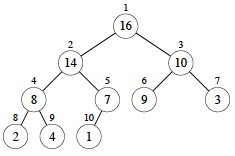

Heaps, Heapsort, and Priority Queues
Outline
- Heaps and their Properties
- Building and Maintaining Heaps
- Application to Sorting
- Application to Priority Queues
Heaps and their Properties
Heaps are a useful data structure with applications to sorting and priority queues.
They are nearly complete binary trees that satisfy a heap property that organizes data under a partial ordering of their keys, enabling access to elements with maximum (or minimum) keys without having to pay the cost of fully sorting the keys.
Heaps are not to be confused with garbage collected storage (a heap of garbage)!
Heaps as Nearly Complete Binary Trees
Conceptually, heaps are nearly complete binary trees: they have leaves on at most two adjacent levels l-1 and l and in which the leaves at the bottommost level l lie in the leftmost positions of l:

These quantitative properties concerning full and nearly complete binary trees will be useful:
Number of elements in nearly complete binary trees of height h (6.1-1)

As discussed in Topic 8, a complete binary tree has at most 2h+1 − 1 nodes (vertices). We can see this by adding up the number of elements at each level: 20 + 21 + ... + 2h for a complete binary tree of height h. Then apply formula A.5 with x=2 and n=h:

You get (2h+1 − 1) / (2 − 1) = 2h+1 − 1.
So, a nearly complete binary tree has at most 2h+1 − 1 elements (if it is complete, as analyzed above). The fewest number of elements it can have at height h is when the last level has just 1 element and the level before it is complete. So do the math for a complete binary tree of height h−1: there are exactly 2h − 1 elements in levels 1 to l−1 and one more element in the lth level, for a total of 2h elements.
Height of an n-element nearly complete binary tree (6.1-2)
Given an n-element nearly complete binary tree of height h, from 6.1-1:
2h ≤ n ≤ 2h+1 − 1 < 2h+1
Taking the log of the first, second and last terms,
h ≤ lg n < h + 1
Since h is an integer, h = ⌊lg n⌋ (Notice the "floor" notation.)
Number of leaves
An n-element nearly complete binary tree has ⌈n/2⌉ leaves. (Notice the "ceiling" notation. Left as exercise.)
Nodes of height h in a nearly complete binary tree (6.3-3)
There are at most ⌈n/2h+1⌉ nodes of height h in a nearly complete binary tree. (A proof by contradiction is possible.)
The Heap Property
Depending on whether it is a max heap or a min heap, to be a heap the binary tree must also satisfy a heap property:
Max Heap Property:
For all nodes _i_, excluding the root, key(parent(_i_)) ≥ key(_i_).
By induction and transitivity of ≥, the max heap property guarantees that the maximum element of a max-heap is at the root.
Min Heap Property:
For all nodes _i_, excluding the root, key(parent(_i_)) ≤ key(_i_).
By induction and transitivity of ≤, the min heap property guarantees that the minimum element of a min heap is at the root.
Array Representation
Heaps are usually represented using arrays, following the mapping shown by the indices in the tree:

The fact that we can see a heap both as a binary tree and as an array is an example of a powerful idea in computer science: mapping between an implementation representation that has efficient computational properties and a conceptual representation that fits how we think about a problem.

If a heap is stored in array A, then movement in the tree is easy:
- Root of the tree is
A[1] - Parent of
A[_i_]isA[⌊_i_/2⌋](Notice we are taking the floor of _i/2)_. - Left Child of
A[_i_]isA[_2i_] - Right Child of
A[_i_]isA[_2i+1_] - Index operations are fast in binary (left and right shifts and setting the low order bit).
Indices of leaves (6.1-7)
By the number of leaves fact, when an n-element heap is stored in the array representation, the leaves are the nodes indexed by ⌊n/2⌋ + 1, ⌊n/2⌋ + 2, ..., n. (Left as exercise.)
This fact will be used in algorithms that only need to process either the leaves or the internal nodes of a heap.
Building and Maintaining Heaps
Maintaining the Heap Property
MAX-HEAPIFY is used to maintain the max-heap property by addressing a possible
violation at node A[_i_]:
- MAX-HEAPIFY assumes that the left and right subtrees of i are max-heaps.
- When called,
A[_i_]may (or may not) be smaller than its children, violating the max-heap property if it is. - After MAX-HEAPIFY, the subtree rooted at i will be a heap.
It works by comparing A[_i_] with its left and right children (lines 3-7),
and if necessary swapping A[_i_] with the larger of the two children to
preserve the heap property (lines 8-9). Tail recursion after the swap
propagates this change until the subtree is a heap (line 10).
Example
Max-Heapify from the node at index 2 (containing 4):

Analysis
It is easy to see that the body of each call before recursion is O(1), and the recursion repeats this for at most O(lg n) nodes on the path from the root to the leaves.
More formally, the worst case is when the bottom level is exactly half full, and in this case, the children's subtrees can have at most 2n/3 nodes. So, adding the cost to recurse on these subtrees plus Θ(1) cost for comparisons at a given node, we get the recurrence relation:
T(n) ≤ T(2n/3) + Θ(1).
This fits case 2 of the Master Theorem (a = 1, b = 3/2 since 1/(3/2) = 2/3, and f(n) = 1 = O(nlog3/21) = O(n0)), giving Θ(lg n).
Building a Heap
Suppose we load some keys into an array in arbitrary order from left to right, creating an almost complete binary tree that may not satisfy the heap property.
Each leaf of the corresponding tree is trivially a heap. If we call MAX- HEAPIFY on the parents of the leaves, the assumption that the right and left subtrees are heaps is met. Once MAX-HEAPIFY returns, the parents are roots of heaps too, so we call it on their parents.
Using the previously established result that the leaves begin in the array at index ⌊n/2⌋ + 1, so the last non-leaf node is at ⌊n/2⌋, the implementation is trivial:
Example

Let's trace this on an array of size 10, for i = 5 downto 1:

(a) The heap rooted at vertex or array index 5 is already a max heap: no change is made.
(b) The heap rooted at index 4 is not a max heap: the value 2 is smaller than its children. We restore the max heap property by swapping 2 with the larger child key, 14 (see next figure for result). If we had swapped with 8, it would not be a max heap: this is why we always swap with the larger child.

(c) Decrementing i to 3, there is another violation of the max heap property, and we swap value 3 at index 3 with value 10 at index 7 (the larger child).
(d) The heap at index 2 violates the max heap property: we must propagate the value 1 down by swapping with 16, and then with 7 in a recursive call to Max- Heapify (see next figure).

(e) Finally, checking the value at index 1 (value 4) against its children, we find we need to swap it with value 16 at index 2, and then with value 14 at index 4 and value 8 at index 9 in two recursive calls to Max-Heapify. (f) shows the resulting max heap.
Correctness
Loop Invariant:
At the start of every iteration of the `for` loop, each node _i_+1, _i_+2, ..., _n_ is a root of a max heap.
Initialization:
By Exercise 6.1-7, each node ⌊n/2⌋ \+ 1, ⌊n/2⌋ \+ 2, ..., _n_ is a leaf, which is the root of a trivial max-heap. Since _i_ = ⌊n/2⌋ before the first iteration of the `for` loop, the invariant is initially true.
Maintenance:
Children of node _i_ are indexed higher than _i_, so by the loop invariant, they are both roots of max-heaps. Thus the assumption of MAX-HEAPIFY is met, enabling it to make node _i_ a max-heap root. Decrementing _i_ reestablishes the loop invariant at each iteration.
Termination:
The loop terminates when _i_ = 0. By the loop invariant, each node including the root indexed by 1 is the root of a max-heap.
Analysis
Sometimes a good approach is to prove an easy bound and then tighten it.
It is easy to see that there are O(n) (about n/2) calls to MAX-HEAPIFY, and we already know that MAX-HEAPIFY on a tree of height O(lg n) is O(lg n). Therefore an upper bound is O(n lg n).
However, only the root node and those near it are at height O(lg n). Many nodes are close to the leaves and we don't even process half of them. So let's try for a tighter bound ...
There are no more than ⌈n/2h+1⌉ nodes of height h (Exercise 6.3-3), and the heap is ⌊lgn⌋ high (Exercise 6.1-2). MAX-HEAPIFY called on a node of height h is O(h), so we need to sum this cost times the number of nodes at each h for all relevant h:
We can simplify this as follows:
- Wrap big-O around the whole thing, leaving h behind.
- Remove the ceiling (which does not affect big-O analysis).
- Rewrite the resulting nh/2h+1 as (n/2)(h/2h).
- Move n/2 out of the summation, as it does not involve h.
- Eliminate the constant 1/2, as we are inside the magical world of big-O!
Tricky, huh? Now maybe you can see why the text authors write that as:

The above summation runs up to ⌊lgn⌋, but we would like to use a convenient formula A-8, shown below, which runs up to ∞:

Since big-O implies an inequality (upper bound), we can go ahead and run the summation to ∞ instead of ⌊lgn⌋, because all of the additional terms are positive (and also very small), so the inequality will be maintained. Then, if we let x = 1/2 (since h/2h = h(1h/2h) can be written as h(1/2)h), we get:

Thus our big-O expression simplifies to O(n*2) = O(n), which is a tighter bound than O(n lg n). The same analysis appliles to the min-heap version.
(You might wonder why we can build a heap in O(n) time when sorting takes O(n lg n), as will be proven in Topic 10. This is because a heap is only a partial order, so less work needs to be done to guarantee the heap property.)
Application to Sorting
Suppose A[1.._n_] contains keys to be sorted. If we call BUILD-MAX-HEAP on
this array, the maximum element will be at A[1]. We can swap it with the
item at A[_n_], then repeat on A[1.._n_-1] (reducing the size of the heap
by 1 each iteration) until this reaches size 1.

Analysis:
BUILD-MAX-HEAP is O(n) (by analysis above). The for loop executes n-1
times, with O(1) exchange each iteration and a call to O(lg n) MAX-HEAPIFY.
Thus heapsort is O(n lg n).
Example:
Suppose we have an array A with five integers. First, BUILD-MAX-HEAP is called on it, resulting in the array A = [7, 4, 3, 1, 2] shown as the tree in (a) below.

Then the loop of HEAPSORT successively takes out the maximum from the first index by swapping it with the last element in the heap, and calls MAX-HEAPIFY. So, 7 is swapped with 2, and then the heap (now one smaller) is reconstructed, resulting in the heap shown in (b): A = [4, 2, 3, 1, 7], with the first four elements being the heap.
The maximum element 4 (from b) was swapped with the minimum element 1 (removing 4 from the heap) and the heap restored, resulting in (c) A = [3, 2, 1, 4, 7] with the first three elements being the heap. Then in (d), the max element 3 was swapped with 1 and the heap restored by percolating 1 down: A = [2, 1, 3, 4, 7] with the heap being the first two elements.

(e) Finally, the maximum element 2 is removed by swapping with the only remaining element 1, resulting in the sorted array shown.
Here is a playing card demonstration of heap sort, in case it helps. This demonstration is using a min-heap to sort the cards with the card of maximum value ending up at the top of the stack of cards.
Application to Priority Queues
An important application of heaps is implementing priority queues. There are min and max versions.
A max-priority queue is an ADT with the following operations:
INSERT(S,x)
S <- S ∪ {_x_}
MAXIMUM(S)
Returns the element of S with the largest key.
EXTRACT-MAX(S)
Removes and returns the element of S with the largest key.
INCREASE-KEY(S,x,k)
Increases the value of _x_'s key to the new value _k_ ≥ current key(_x_).
A min-priority queue has corresponding operations MINIMUM, EXTRACT-MIN, and DECREASE-KEY.
Max-priority queues can be used in job scheduling: the highest priority job is always run next, but job priority can be increased as a job ages in the queue, or for other reasons.
Min-priority queues will be very important in graph algorithms we cover later in the semester: efficient implementations of EXTRACT-MIN and DECREASE-KEY will be especially important.
Min-priority queues also used in event-driven simulations, where an event may generate future events, and we need to simulate the events in chronological order.
Accessing Maximums
In the array representation, MAXIMUM is trival to implement in O(1) by returning the first element of the array. However, if we EXTRACT-MAX we need to restore the heap property afterwards.
HEAP-EXTRACT-MAX takes the root out, replaces it with the last element in the heap (stop and think: why this element?), and then uses MAX-HEAPIFY to propagate that element (which probably has a small key) down to its proper place:

HEAP-EXTRACT-MAX is O(lg n) since there is only constant work added to the O(lg n) MAX-HEAPIFY.
Increasing keys
An increase to the key may require propagating the element up the tree (the opposite direction as compared to MAX-HEAPIFY):

This is clearly O(lg n) due to following a simple path up the tree. Let's work this example, where the element at i has its key increased from 4 to 15, and then it is propagated up:

This propagation follows the "Peter Principle": the claim that persons in a hierarchical organization are promoted through the ranks of management until they reach their level of incompetency!!!
Inserting New Elements
When inserting, we are going to have to make the heap bigger, so let's add the element at the end and propagate it up to where it belongs.
HEAP-INCREASE-KEY already has the code for this propagation, so if we set the key to the smallest possible value and then try to increase it with HEAP- INCREASE-KEY, it will end up in the right place:
Again, this is O(lg n).
Next
In Topic 10 we wrap up our examination of sort algorithms with Quicksort, a practical sort that performs well in practice and also illustrates the value of probabilistic analysis and random algorithms.
We will return to other kinds of trees, in particular special kinds of binary search trees that are kept balanced to guarantee O(lg n) performance, in Topic 11.
Dan Suthers Last modified: Sat Feb 15 16:37:46 HST 2014
Images are from the instructor's material for Cormen et al. Introduction to
Algorithms, Third Edition.